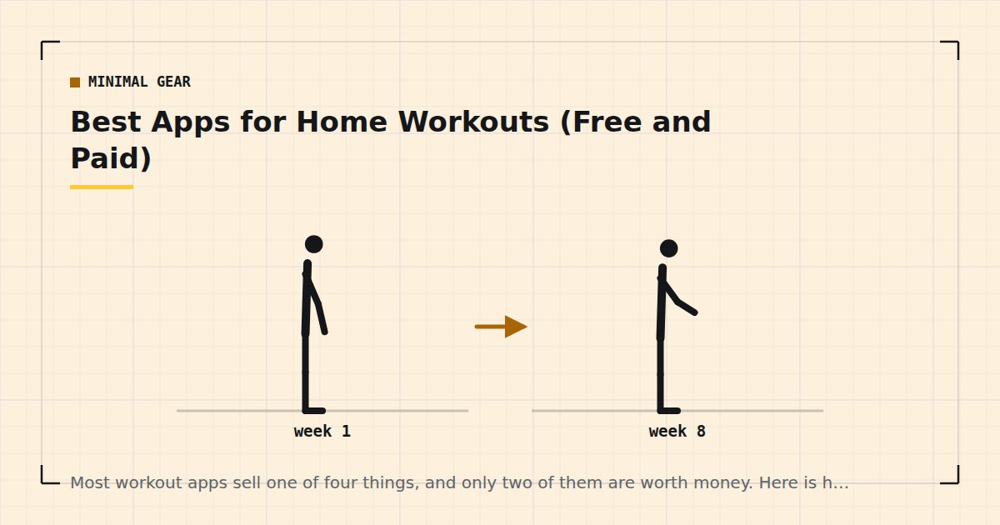

Minimal Gear
Best Apps for Home Workouts (Free and Paid)
Most workout apps sell one of four things, and only two of them are worth money. Here is how to tell which you are being sold before you subscribe.

Workout apps change constantly — features are added and removed, prices move, and apps get bought and shut down. A list of specific recommendations written today would be partly wrong within a year, and I would rather give you something that stays useful.
A note on why there is no ranking here
Two reasons. First, I cannot verify current pricing or feature sets for you, and publishing specifics I have not checked would be exactly the sort of thing this site tries not to do.
Second, and more usefully: the right app depends almost entirely on which of four problems you actually have. Once you know that, the choice is usually obvious from the app store listing.
The four things apps actually sell
1. A timer. Interval timing, rest timers, work-rest ratios. Genuinely useful for the formats in circuit training at home and EMOM workouts — and available free in dozens of apps and on most phones.
2. A workout library. A large collection of sessions and exercise demonstrations. Useful once, when you are learning movements. Rapidly less useful thereafter, because a good programme uses the same handful of exercises for months — see bodyweight exercise progressions.
3. A programme. A structured, progressive plan that tells you what to do this week based on what you did last week. This is the genuinely valuable category and the rarest.
4. Accountability and tracking. Logging, streaks, reminders, progress graphs. Value varies enormously by person and is worth being honest with yourself about.
Most apps sell one and two while implying three.
What is worth paying for
Genuine progressive programming. An app that adjusts based on your logged performance — increasing volume when you hit targets, holding when you do not, and moving you to harder variations at defined criteria — is doing something you would otherwise have to do yourself. That is worth money.
The test: does it change what it prescribes based on what you logged? If the same week appears regardless of your input, it is a workout library with a calendar.
Good exercise instruction. Clear video from multiple angles with cues about what to avoid, not just what to do. Genuinely valuable when learning, and worth a month's subscription even if you then cancel.
Structured logging, if you will use it. Progress in home training is invisible without a record, and six weeks of improvement feels like nothing from the inside — the argument is in tracking progress without a gym or scale. A notes app does this free, but a purpose-built one is less friction.
What is not
An interval timer. Free, several times over, including on most phones out of the box.
Endless variety. Frequently sold as a feature and is closer to a bug. Rotating through hundreds of sessions removes your ability to tell whether you are improving, because there is nothing to compare against. A good programme repeats.
Calorie estimates for exercise. Wildly inaccurate for bodyweight training, and they encourage the mistaken belief that exercise is how weight is lost — the honest version is in the realistic weight-loss plan.
“AI-personalised” plans, unless you can see them responding to your logged data. The term is used loosely and often describes a decision tree with four branches.
Streaks that punish rest days. Actively counterproductive. Adaptation happens during recovery, and an app that breaks your streak for taking a scheduled rest day is optimising for engagement rather than results.
If the app prescribes the same week regardless of what you logged, it is a workout library with a calendar attached.
How to judge one in ten minutes
Five questions, answerable from a free trial or the store listing.
1. Does it progress? Look for defined criteria for moving on, or adjustment based on logged performance. If every week looks the same, it is not a programme.
2. Does it include pulling? Most bodyweight apps skip rowing entirely because it needs equipment. An app whose upper-body sessions are all pressing will leave you imbalanced — see rows at home.
3. Does it have rest days? A plan with sessions seven days a week is optimising for engagement, not adaptation. Meta-analytic evidence supports training a muscle group two or three times a week rather than daily.1
4. Can you see the whole plan? If you cannot see next month, you cannot tell whether it progresses.
5. Does it work offline? Practical, and it matters if you train in a basement or while travelling.
What you can do free
Honestly, most of it.
Timer: your phone's built-in timer, or any free interval app.
Programme: a written plan. The 4-week beginner plan and the three-day split on this site are complete and free, and the progression criteria are in bodyweight exercise progressions.
Logging: a notes app, or a piece of paper. Record the exercise, the variation, the sets and the reps on your first exercise. That is enough.
Instruction: free video is abundant, though quality varies enormously and the incentives push toward novelty rather than fundamentals.
What an app genuinely adds is reduced friction and someone else having made the decisions. Both are worth something — friction is what stops sessions happening, as covered in how to actually stick to a home workout habit. Just be clear that is what you are buying.
On subscriptions
One practical note. The value of a workout app is highest in the first two months, while you are learning movements and establishing a routine, and declines steadily after that as you learn what you are doing.
Subscribing for two or three months while you learn, then cancelling and continuing with a written plan, is a reasonable strategy and considerably cheaper than an annual subscription you use twice a week in March and not at all by August.
Adult activity guidance asks for muscle-strengthening activity involving all major muscle groups on two or more days a week, alongside regular aerobic activity.2 Nothing in that requires a subscription, and no app has ever made anyone train.
Where to go next
For a complete free programme, start with the 4-week beginner plan. For what to record, see tracking progress without a gym or scale.
Frequently asked questions
Are home workout apps worth paying for?
Worth paying for genuine progressive programming that adjusts based on your logged performance, and for good exercise instruction while you are learning. Not worth paying for an interval timer, endless variety, or calorie estimates.
How do I tell if a workout app has a real programme?
Does it change what it prescribes based on what you logged? If the same week appears regardless of your input, it is a workout library with a calendar attached rather than a programme.
Is workout variety in an app a good thing?
Usually not. Rotating through hundreds of sessions removes your ability to tell whether you are improving, because there is nothing to compare against. A good programme repeats the same movements and progresses their difficulty.
Can I train at home without any app?
Yes, and most people should. A phone timer, a written plan and a notes app cover everything an app provides except reduced friction and someone else having made the decisions.
Should I subscribe annually to a workout app?
Usually not. The value is highest in the first two months while you are learning movements, and declines as you learn what you are doing. Two or three months then cancelling is generally the better arrangement.
Do workout apps count calories accurately?
Not for bodyweight training, where estimates are wildly variable. They also encourage the mistaken belief that exercise is how weight is lost, when diet drives most of the result.
Sources and further reading
- Schoenfeld BJ, Ogborn D, Krieger JW. “Effects of Resistance Training Frequency on Measures of Muscle Hypertrophy: A Systematic Review and Meta-Analysis.” Sports Medicine, 2016;46(11):1689–1697. PubMed.
- World Health Organization. WHO Guidelines on Physical Activity and Sedentary Behaviour. 2020.
- NHS. Physical activity guidelines for adults aged 19 to 64.
- Schoenfeld BJ, Ogborn D, Krieger JW. “Dose-response relationship between weekly resistance training volume and increases in muscle mass: A systematic review and meta-analysis.” Journal of Sports Sciences, 2017;35(11):1073–1082. PubMed.
Comments
Comments are not enabled yet. Add a hosted comment embed (Disqus, Commento, Giscus) inside this container when you are ready.